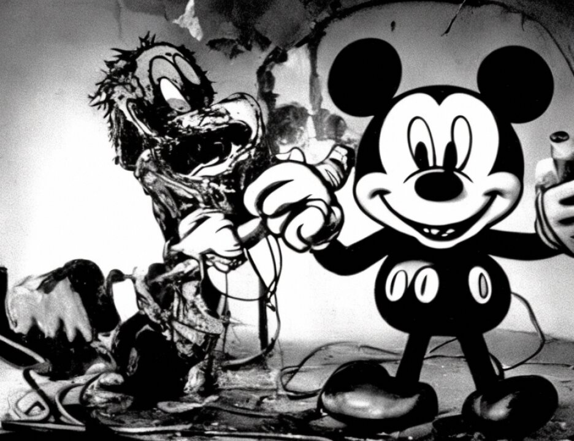

21
22
23
24
25
7294
1 APPEARANCES
2 MARY JO WHITE
United States Attorney for the
3 Southern District of New York
BY: PATRICK FITZGERALD
4 MICHAEL GARCIA
Assistant United States Attorneys
5
6 FREDRICK H. COHN
DAVID P. BAUGH
7 LAURA GASIOROWSKI
Attorneys for defendant Mohamed Rashed Daoud Al-'Owhali
8
DAVID RUHNKE
9 Attorney for defendant Khalfan Khamis Mohamed
10
11
12
13
14
15
16
17
18
19
20
21
22
23
24
25
7301
1 (Deliberations resumed)
2 (Pages 7295-7300 sealed)
3 (In open court; time noted, 12:45 p.m.; defendant
4 present)
5 THE COURT: The note from the jury reads: "The jury
1